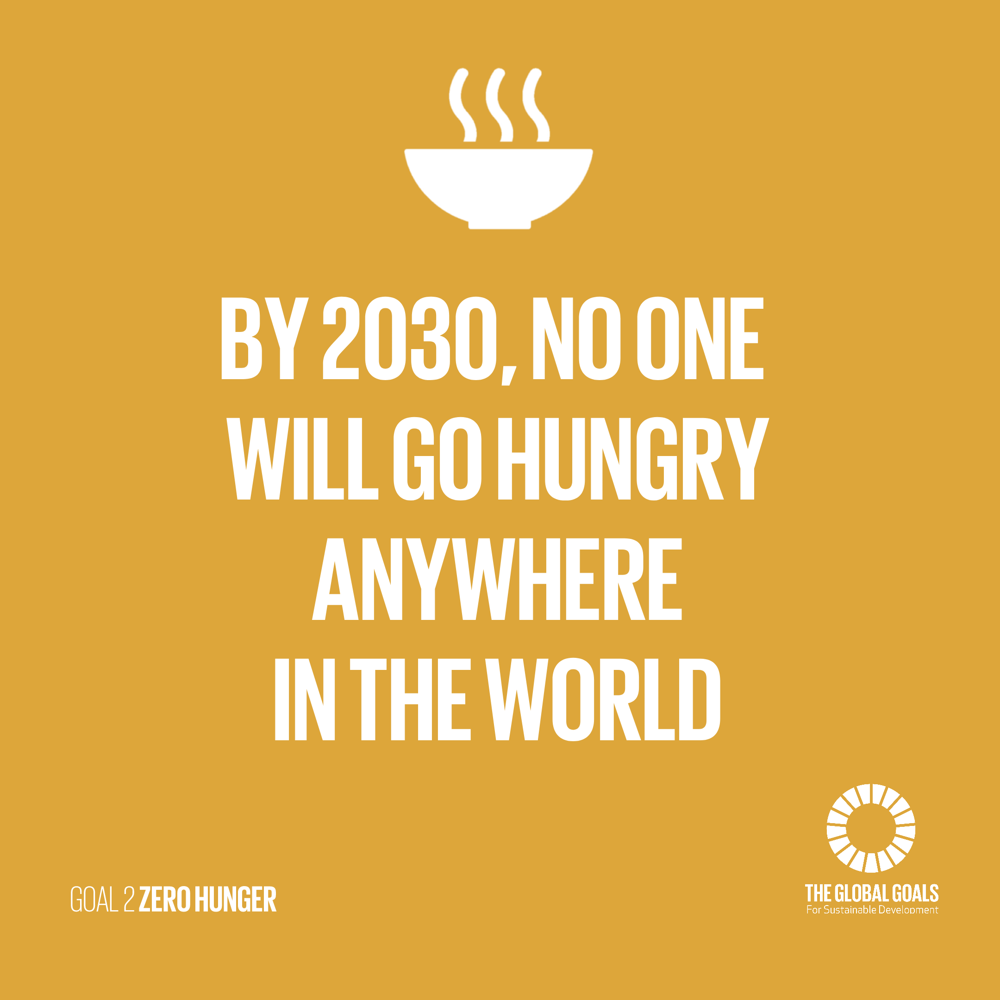

<p style="color: rgb(3, 28, 45); font-family: &quot;Open Sans&quot;,-apple-system,system-ui,BlinkMacSystemFont,&quot;Segoe UI&quot;,Roboto,&quot;Helvetica Neue&quot;,Arial,sans-serif; font-size: 17.6px; font-style: italic; font-weight: 400; letter-spacing: normal; orphans: 2; text-indent: 0px; text-transform: none; white-space: normal; widows: 2; word-spacing: 0px; text-align: center;"><big><big><big><span style="text-decoration: underline; font-weight: bold;">UN GOAL 2 ZERO HUNGER</span></big></big></big></p><p style="color: rgb(3, 28, 45); font-family: &quot;Open Sans&quot;,-apple-system,system-ui,BlinkMacSystemFont,&quot;Segoe UI&quot;,Roboto,&quot;Helvetica Neue&quot;,Arial,sans-serif; font-size: 17.6px; font-style: italic; font-weight: 400; letter-spacing: normal; orphans: 2; text-indent: 0px; text-transform: none; white-space: normal; widows: 2; word-spacing: 0px; text-align: center;"><a href="http://cdn.globalgoals.org/2017/10/Goal-2-Infograhic.png"></a><br><big><big><big><span style="text-decoration: underline; font-weight: bold;"></span></big></big></big></p><p style="color: rgb(3, 28, 45); font-family: &quot;Open Sans&quot;,-apple-system,system-ui,BlinkMacSystemFont,&quot;Segoe UI&quot;,Roboto,&quot;Helvetica Neue&quot;,Arial,sans-serif; font-size: 17.6px; font-style: italic; font-weight: 400; letter-spacing: normal; orphans: 2; text-indent: 0px; text-transform: none; white-space: normal; widows: 2; word-spacing: 0px; text-align: center;"><big><big><big><span style="text-decoration: underline; font-weight: bold;"></span></big></big></big><br></p><p style="color: rgb(3, 28, 45); font-family: &quot;Open Sans&quot;,-apple-system,system-ui,BlinkMacSystemFont,&quot;Segoe UI&quot;,Roboto,&quot;Helvetica Neue&quot;,Arial,sans-serif; font-size: 17.6px; font-weight: 400; letter-spacing: normal; orphans: 2; text-indent: 0px; text-transform: none; white-space: normal; widows: 2; word-spacing: 0px; text-align: left; font-style: italic;"><big><big><big>"Jeden Tag müssen Millionen Frauen und Männer weltweit darum kämpfen, ihren Kindern eine nahrhafte Mahlzeit zu ermöglichen.<span>&nbsp;</span><strong style="">In einer Welt, in der es eigentlich&nbsp;genug Nahrung für alle gibt, gehen noch immer 690&nbsp;Millionen Menschen<span>&nbsp;</span></strong><strong style="">mit leerem&nbsp;Magen zu Bett</strong>. 2019 litten<span>&nbsp;</span><strong>135 Millionen Menschen in 55 Ländern<span>&nbsp;</span></strong>akut<strong style="">&nbsp;</strong>Hunger.&nbsp;</big></big></big></p><p style="color: rgb(3, 28, 45); font-family: &quot;Open Sans&quot;,-apple-system,system-ui,BlinkMacSystemFont,&quot;Segoe UI&quot;,Roboto,&quot;Helvetica Neue&quot;,Arial,sans-serif; font-size: 17.6px; font-weight: 400; letter-spacing: normal; orphans: 2; text-indent: 0px; text-transform: none; white-space: normal; widows: 2; word-spacing: 0px; text-align: left; font-style: italic;"><big><big><big>Hunger und Mangelernährung zu beseitigen, ist eine der größten Herausforderungen unserer Zeit. Unzureichende  oder falsche  Ernährung bedeutet nicht nur Leid und gesundheitliche Probleme. Sie hemmt auch Fortschritte in Entwicklungsbereichen wie Bildung und Arbeit.</big></big></big></p><p style="color: rgb(3, 28, 45); font-family: &quot;Open Sans&quot;,-apple-system,system-ui,BlinkMacSystemFont,&quot;Segoe UI&quot;,Roboto,&quot;Helvetica Neue&quot;,Arial,sans-serif; font-size: 17.6px; font-weight: 400; letter-spacing: normal; orphans: 2; text-indent: 0px; text-transform: none; white-space: normal; widows: 2; word-spacing: 0px; text-align: left; font-style: italic;"><big><big><big>2015 verabschiedete die Weltgemeinschaft 17 Ziele für nachhaltige Entwicklung, um das Leben der Menschen bis 2030 dauerhaft zu verbessern.<span>&nbsp;</span><strong style="">Ziel 2  Zero Hunger  ist die oberste Priorität des UN World Food Programme (WFP)</strong>. Es verfolgt die Absicht, Hunger zu beenden, Ernährung zu verbessern, den Zugang zu Nahrungsmitteln und deren Verfügbarkeit zu sichern und nachhaltige Landwirtschaft zu fördern."</big></big></big></p><p style="color: rgb(3, 28, 45); font-family: &quot;Open Sans&quot;,-apple-system,system-ui,BlinkMacSystemFont,&quot;Segoe UI&quot;,Roboto,&quot;Helvetica Neue&quot;,Arial,sans-serif; font-size: 17.6px; font-style: normal; font-weight: 400; letter-spacing: normal; orphans: 2; text-align: start; text-indent: 0px; text-transform: none; white-space: normal; widows: 2; word-spacing: 0px;"><big><big><big><span style="font-style: italic;">Quelle <a href="https://de.wfp.org/zero-hunger" target="_top">https://de.wfp.org/zero-hunger</a></span></big></big></big></p><p style="color: rgb(3, 28, 45); font-family: &quot;Open Sans&quot;,-apple-system,system-ui,BlinkMacSystemFont,&quot;Segoe UI&quot;,Roboto,&quot;Helvetica Neue&quot;,Arial,sans-serif; font-size: 17.6px; font-style: normal; font-weight: 400; letter-spacing: normal; orphans: 2; text-align: start; text-indent: 0px; text-transform: none; white-space: normal; widows: 2; word-spacing: 0px;"><big><big><big><span style="font-style: italic;"><br></span></big></big></big></p><p style="color: rgb(3, 28, 45); font-family: &quot;Open Sans&quot;,-apple-system,system-ui,BlinkMacSystemFont,&quot;Segoe UI&quot;,Roboto,&quot;Helvetica Neue&quot;,Arial,sans-serif; font-size: 17.6px; font-style: normal; font-weight: 400; letter-spacing: normal; orphans: 2; text-align: start; text-indent: 0px; text-transform: none; white-space: normal; widows: 2; word-spacing: 0px;"><big><big><big><big>Wie schon oben genannt ist das <span style="font-weight: bold;">Hauptziel</span> der UN den Hunger bis 2030 zu besiegen. Für die meisten Leute in <a href="https://de.wikipedia.org/wiki/Industriestaat">Industriestaaten</a> ist es normal satt in sein warmes Bett zu gehen aber für die Leute die in den <a href="https://de.wikipedia.org/wiki/Entwicklungsland">Entwicklungsländer</a> leben ist das gar nicht natürlich. Es gibt zwar ein paar Organisation (Wie zum Beispiel die "<a href="https://www.aktiongegendenhunger.de/">Aktion gegen Hunger</a>" die sich gegen Hunger einsetzten aber das recht bei weiten nicht da <a href="UN-WIKI-NoPoverty.html">rund 3,4 Millarden Menschen in Armut leben</a>. <br>Abschließend kann man sagen, dass man auf jeden Fall kein Essen verschwenden soll. Und wenn man ein bisschen Geld übrig hat, sollte man auch auf jeden Fall gegen Hunger spenden!</big></big></big></big></p><p style="color: rgb(3, 28, 45); font-family: &quot;Open Sans&quot;,-apple-system,system-ui,BlinkMacSystemFont,&quot;Segoe UI&quot;,Roboto,&quot;Helvetica Neue&quot;,Arial,sans-serif; font-size: 17.6px; font-style: normal; font-weight: 400; letter-spacing: normal; orphans: 2; text-align: start; text-indent: 0px; text-transform: none; white-space: normal; widows: 2; word-spacing: 0px;"><br></p><span style="font-family: -apple-system,BlinkMacSystemFont,&quot;Segoe UI&quot;,Roboto,Helvetica,Arial,sans-serif,&quot;Apple Color Emoji&quot;,&quot;Segoe UI Emoji&quot;,&quot;Segoe UI Symbol&quot;;"><big><big><big>Du willst mehr über die Ziele der UN erfahren? Schau dir doch auch meine restlichen Seiten an:<br>
</big></big></big></span>
<div style="text-align: center;"><span style="font-family: -apple-system,BlinkMacSystemFont,&quot;Segoe UI&quot;,Roboto,Helvetica,Arial,sans-serif,&quot;Apple Color Emoji&quot;,&quot;Segoe UI Emoji&quot;,&quot;Segoe UI Symbol&quot;;"><big><big>&nbsp;&nbsp;&nbsp; <big><a href="UN-WIKI-NoPoverty.html">UN GOAL No Poverty</a><br>
<a href="file://///SDC01/StudentsHome$/fe.saurenbach/Data/UN-WIKI-SAURENBACH/Sites/UN-WIKI-Zero-Hunger.html">UN GOAL Zero Hunger</a><br>
<a href="UN-WIKI-HEALTH-AND-WELLBEING.html">UN GOAL Good Health and Well Being</a></big></big></big></span><br>
<span style="font-family: -apple-system,BlinkMacSystemFont,&quot;Segoe UI&quot;,Roboto,Helvetica,Arial,sans-serif,&quot;Apple Color Emoji&quot;,&quot;Segoe UI Emoji&quot;,&quot;Segoe UI Symbol&quot;;"><a href="UN-WIKI-MAIN.html"><big><big><big>UN GOAL Main Page</big></big></big></a></span></div>
<p style="color: rgb(3, 28, 45); font-family: &quot;Open Sans&quot;,-apple-system,system-ui,BlinkMacSystemFont,&quot;Segoe UI&quot;,Roboto,&quot;Helvetica Neue&quot;,Arial,sans-serif; font-size: 17.6px; font-style: normal; font-weight: 400; letter-spacing: normal; orphans: 2; text-align: start; text-indent: 0px; text-transform: none; white-space: normal; widows: 2; word-spacing: 0px;"><br></p><p style="color: rgb(3, 28, 45); font-family: &quot;Open Sans&quot;,-apple-system,system-ui,BlinkMacSystemFont,&quot;Segoe UI&quot;,Roboto,&quot;Helvetica Neue&quot;,Arial,sans-serif; font-size: 17.6px; font-style: normal; font-weight: 400; letter-spacing: normal; orphans: 2; text-align: start; text-indent: 0px; text-transform: none; white-space: normal; widows: 2; word-spacing: 0px;"><br></p><p style="color: rgb(3, 28, 45); font-family: &quot;Open Sans&quot;,-apple-system,system-ui,BlinkMacSystemFont,&quot;Segoe UI&quot;,Roboto,&quot;Helvetica Neue&quot;,Arial,sans-serif; font-size: 17.6px; font-style: normal; font-weight: 400; letter-spacing: normal; orphans: 2; text-align: start; text-indent: 0px; text-transform: none; white-space: normal; widows: 2; word-spacing: 0px;"><br></p><p style="color: rgb(3, 28, 45); font-family: &quot;Open Sans&quot;,-apple-system,system-ui,BlinkMacSystemFont,&quot;Segoe UI&quot;,Roboto,&quot;Helvetica Neue&quot;,Arial,sans-serif; font-size: 17.6px; font-style: normal; font-weight: 400; letter-spacing: normal; orphans: 2; text-align: start; text-indent: 0px; text-transform: none; white-space: normal; widows: 2; word-spacing: 0px;"><br></p><p style="color: rgb(3, 28, 45); font-family: &quot;Open Sans&quot;,-apple-system,system-ui,BlinkMacSystemFont,&quot;Segoe UI&quot;,Roboto,&quot;Helvetica Neue&quot;,Arial,sans-serif; font-size: 17.6px; font-style: normal; font-weight: 400; letter-spacing: normal; orphans: 2; text-align: center; text-indent: 0px; text-transform: none; white-space: normal; widows: 2; word-spacing: 0px;"><big><big><big><big><br></big></big></big></big></p>